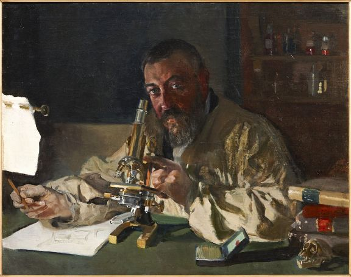
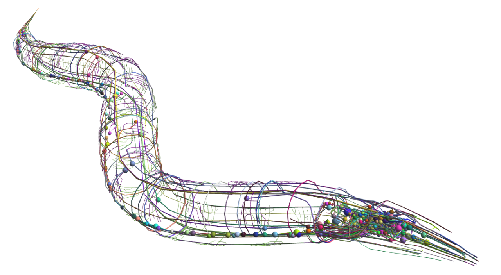

About Me

Education:I’m a postdoctoral researcher at the MRC Laboratory of Molecular Biology, Cambridge UK, working on the molecular and cellular mechanisms that allow highly neuromodulatory neurons to perform their role. I obtained my PhD in computational and molecular neuroscience from the University of Cambridge, where I was based at the MRC Laboratory of Molecular Biology and the Systems Neuroscience Laboratory in the Department of Psychiatry. During my PhD I used molecular and computational techniques to build brain maps from complex biological datasets representing the topology of neuronal networks. I worked with data from different nematode species and mouse, focusing on neuromodulatory networks in these species. Previously, I obtained my BSc in Biochemistry in June 2018 at Imperial College London, UK, specialising in complex systems and synthetic biology.
Research Interests: My research aims to determine some of the molecular and cellular mechanisms that control and generate behaviour in C.elegans via understanding neuronal interactions and dynamics. I use a combination of computational and experimental tools including network analysis, behavioural assays and microscopy in order to test how neuromodulation affects the synaptic connectome and how that translates to behaviour, in particular locomotion.
Hobbies: Outside of my research I am pasionate about art, chamber music and outdoor sports like sailing or rowing. I also enjoy doing Outreach activities and you can usually find me in shopping malls or museums bringing science to the public.
Research

Mapping the Neuropeptidergic Connectome of C.elegans
The synaptically-wired neuronal circuitry is modulated by monoamines and neuropeptides, which act mostly through extrasynaptic volume transmission. This modulation is critical to nervous system function, yet little is known about the structure and function of extrasynaptic signaling networks at a whole-organism level.
To this end, we used the recently published single neuron gene expression from the CeNGEN database along with deorphanization data for neuropeptide-activated G-protein coupled receptors (GPCRs) to generate a draft connectome of neuropeptide signaling networks in C. elegans. We then use graph theory analysis and other data analysis methods to better understand the network structure and how it relates to worm behaviour.
Publications

Powerful and interpretable behavioural features for quantitative phenotyping of Caenorhabditis elegans
The Neuropeptidergic Connectome of Caenorhabditis elegans
The Neuropeptidergic Connectome of Caenorhabditis elegans
Neuropeptide signaling network of Caenorhabditis elegans: from structure to behavior
C. elegans wired and wireless connectome: insights into principles of nervous system structure and function
Molecular patterns of evolutionary changes throughout the whole nervous system of multiple nematode species
Building and characterising the neuropeptidergic connectome of Caenorhabditis elegans
Outreach

Conferences: I have helped organise two student conferences, the 2019 BAC (Biotechnology Annual Conference) in Madrid, Spain. The 2021 LMB/IBMB student symposium in Cambridge, UK. And I co-organised the 2022 LMB/MPIB student symposium also in Cambrige, UK.
Workshops: I enjoy taking part in lots of different scientific workshops both in conferences and as part of science divulgation, including: The Royal Society MRC-LMB Exhibit in 2019, the Cambridge Science Festivals with activities like "Worms are Cleverer than you think", the Imperial Summer Festivals
Teaching: I have tought STEM subjects to high school students as part of several volunteer experiences. I have also tutored Cambridge undergraduate students in a range of subjects related to Neurobiology, from Mathematical and Computational Biology, and I have imparted lectures at the KU Leuven Endocrinology master program.
Contact
Email: lsanchez@mrc-lmb.cam.ac.uk
Address: MRC-LMB, Francis Crick Avenue, CB2 0HQ